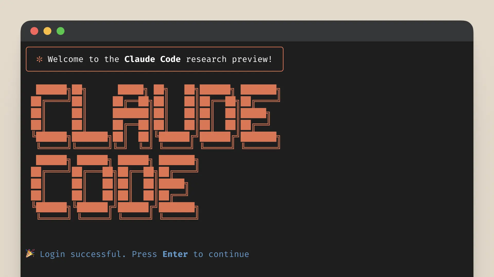
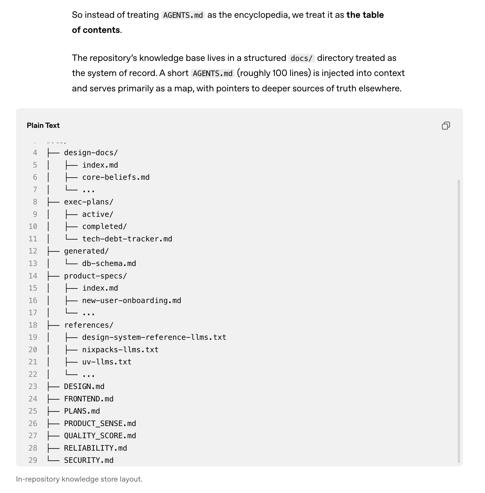

Reflections on AI from 2022 to 2026 - Prompt Engineering (LangChain) to Context Engineering (LangGraph) to Harness Engineering (Claude Code)
I wanted to take some time to write some reflections on my experiences using AI since the end of 2022 to today, Feb 2026.
I’d like to observe how things have changed through these years across 3 areas:
- Agent Harnesses - LangChain, LangGraph (and other Agent Frameworks), Claude Code SDK
- Popular “X engineering” terms - Prompt Engineering, Context Engineering, Harness Engineering
- Coding Assistance - Github Copilot, Cursor, Claude Code
Nov 2022 - Dec 2023 - LangChain, Prompt Engineering, Github Copilot
ChatGPT came out November 2022. It immediately showed the utility of large language models and providing a natural langauge interface to AI. Most people used and got familiar with the chat-based interface. Developers though wanted to call these models programmatically via an API. Libraries like LangChain grew in popularity as LLM wrappers. They provided common interfaces to all the model providers: OpenAI, Google, Anthropic, etc.
Harrison Chase actually released LangChain on October 25, 2022 (before ChatGPT was released!). LangChain provided a TypeScript and Python interface to language model APIs. As a Python developer, I benefitted tremendously from this open source library. Just following the releases and keeping up with LangChain’s blog was so educational. I owe a lot of my learnings that first year to LangChain and the team there.
- I learned prompting best practices because the library had so many useful prompts. Prompt engineering became the popular phrase and some companies even started hiring prompt engineers.
- I learned about the idea of RAG (Retrieval Augmented Generation), basically doing Q&A over a corpus of documents. I actually used LangChain to build a simple Q&A assistant over my company’s Slack messages that proved valuable.
- I learned about the importance of LLM traces. They were early in establishing standards on what LLM observability looked like with products like LangSmith.
- I began to appreciate the importance of evals.
- It was difficult to get LLMs to return structured output so LangChain implemented things like a PydanticOutputParser that worked well.
The applications built during this time usually involved one LLM call doing some task.
Github Copilot started getting popular during this time. It was probably the first useful application wrapping an LLM. It provided developers coding assistance by doing text completion. They pioneered ghost text and tab completion.
The best OpenAI model at the end of the year was gpt-4-turbo
2024 - LangGraph, Cursor
2024 was the year of agent frameworks. It seemed like new agent frameworks were popping up every few weeks. LangGraph was the one I became most familiar with. It was released January 22, 2024.

Language models gained the ability to call tools. These agent frameworks made it easy to create agents that would call tools in a loop (an extension of an idea first from the ReAct paper). You would give an agent a query/task, it would attempt to answer your question or accomplish your task via tool calls. The series of tool calls would not be determnistic. Rather the agent would decide after the first tool call if it had enough info to finish the task OR it would make another tool call (could be a different tool). I remember I was blown away when I saw this in action. Philipp Schmid has a good post describing this agent architecture in more detail.
LangChain continued to push the boundaries forward in agents in their LangGraph library:
- I learned about the structure of different types of messages sent to the LLM:
Human,AI,Tool - I learned about short-term and long-term memory
- I learned about different multi-agent architectures
- During this time, I built this internal agent using LangGraph that allowed users to ask about internal incidents. The agent was basically a ReAct loop with different tools. Some of the tools executed BigQuery queries or called the Jira API.
- It seemed like everyone wanted to release an agent framework: LangGraph, ADK (Google), Agents SDK (OpenAI), PydanticAI, AI SDK (Vercel), CrewAI, etc.
Newer coding IDEs also became popular during this time. Cursor was the first one, Windsurf came along later. Besides providing code completion, these VS Code forks provided a sidebar where you could chat with your code, you could ask questions about your code and even ask the agent to do tasks that touched multiple files. I remember being very surprised this worked but it became such an unlock for developer productivity.
The best OpenAI models at the end of the year were gpt-4o and o1
2025 - Claude Code, Context Engineering
2025 was the year of Claude Code and coding agents.

It’s hard to believe Claude Code was:
- released as somewhat of an after thought during Anthropic’s announcement of Claude 3.7 Sonnet
- the first model it used was Claude 3.7 Sonnet! We’ve had 3 versions of model released since that time: Sonnet/Opus 4, Sonnet/Opus 4.5 and Opus 4.6 releases since that time.
Claude Code was the first coding agent to:
- live in a user’s machine, accessing the user’s file system and access
- be in a terminal UI
- make use of a
Bashtool
Using Claude Code was a tremendous unlock not only terms of accomplishing what I was supposed to do but it allowed me to do things I never would have done because I either didn’t have the technical ability or I didn’t have the time. I’ve also seen how using a tool like Claude Code is massively compounding.
- You can prompt Claude Code to configure itself. “Please set up a
/statuslinefor me.” - Anthropic released skills and then open sourced it. Now most coding agents support skills. These are markdown files that provide an agent with steps to accomplish a task or knowledge/reference materials. Claude Code can create it’s own skills too through prompting. There are even “meta-skills” that instruct Claude to create its own skills during certain situations. There are many examples of skills you can install that accomplish all kinds of knowledge work. Below are repos of plugins or collections of Claude Code functionality (including skills)
I realized the better I learn how to use this tool, Claude Code, the more effectively and efficiently I can do my job. So now I try and dedicate time to reading about developments in Claude Code, reading the CHANGELOG.md, reading about how others are using it like Boris Cherny, and writing my own tips on how to use Claude Code.
Some pitfalls I’ve encountered and lessons I’ve learned along the way:
- Working with Claude Code is pretty intense at times. I could be running multiple Claudes in different terminals. I’m reading a lot of generated output (code, text). I’m thinking critical and making decisions on what to do next. 1 hour of intense pairing with Claude Code feels like 3 hours of working without. HBR had an article that shared similar sentiments.
- Not allowing Claude Code do too much at once and surpass my understanding of a problem. You having an understanding of the system is important to effectively guide future changes and also validate the results. The term for this is cognitive debt.
- A tool like Claude Code has varying levels of effectiveness depending on the level of experience of the user. I’ve encouraged junior developers to try and understand the code Claude Code is generating, use a learning output style and make smaller PRs.
- Like any new technology or tool, not everyone is willing to adopt new tools and new ways of working at the same speed
What I found also surprising was coding agents like Claude Code became agent frameworks (see Claude Agent SDK. People at Anthropic realized Claude Code was actually a valuable generic agent harness and could have broad usefulness. They released Claude Cowork, which basically wraps Claude Code in a nicer UI.
Context engineering was the popular term this year. It was no longer about effectively prompting your agents or LLMs. It was about making sure the right context made it into your agents.
The best OpenAI models at the end of the year were GPT-5.2
2026 - OpenClaw, Harness Engineering
We’re just beginning 2026. OpenClaw is the biggest development in agents and agent harnesses. OpenClaw shows the promise of agents that are:
- Always on
- You can connect to them via multiple channels (WhatsApp, Telegram, iMessage)
- HEARTBEAT.md - Heartbeat runs periodic agent turns in the main session so the model can surface anything that needs attention without spamming you. The default prompt has:
- Background tasks: “Consider outstanding tasks” nudges the agent to review follow-ups (inbox, calendar, reminders, queued work) and surface anything urgent.
- Human check-in: “Checkup sometimes on your human during day time” nudges an occasional lightweight “anything you need?” message, but avoids night-time spam by using your configured local timezone (see /concepts/timezone).
- I see this becoming at the very least like a true AI executive assistant and eventually a super assistant
What I found surprising is, OpenClaw didn’t innovate in the model layer, it was a step-forward in the agent harness and the interface into the model. OpenClaw under the hood is also using a simple agent harness called Pi which I learned from Armin Ronacher.
I’ve since setup an OpenClaw named Sage on an old Macbook and it has proven useful:
- reminding me about different calendar events
- organizing it’s own information using the PARA method in Obsidian
- doing research each day for me on different topics
- it can update itself
Harness Engineering was a new term that popped up in a post where an OpenAI team used Codex to create a new software product where they intentionally didn’t write any lines of code over a period of 5 months. Agents produced:
- Product code and tests
- CI configuration and release tooling
- Internal developer tools
- Documentation and design history
- Evaluation harnesses
- Review comments and responses
- Scripts that manage the repository itself
- Production dashboard definition files
Humans always remain in the loop, but work at a different layer of abstraction than we used to. We prioritize work, translate user feedback into acceptance criteria, and validate outcomes. When the agent struggles, we treat it as a signal: identify what is missing—tools, guardrails, documentation—and feed it back into the repository, always by having Codex itself write the fix.
I’ve experienced similar things on a recent machine learning project. Claude Code was writing 95% of the code, tests, CI configuration, documentation, and ML training and pipeline code. I found myself more as an orchestrator of agents accomplishing meaningful work. I did spent time thinking about how to optimize the repository to be more useful to the agent. I landed on a similar structure that the above Codex article talks about in a “In-repository knowledge store.” I created a machine learning experiment log that started out as a single markdown file RESEARCH_LOG.md that quickly grew too unweidly. To a RESEARCH_LOG.md that points to sub-folders for each ML experiment.

Reflections
As I think back on these 3-4 years, one of the most important traits is a curiosity and a desire to keep learning. The pace of change in AI has been so fast. I realize you have to be willing to try new things, new ways of working and adopt new tooling otherwise you run the risk of being made somewhat obsolete.
Knowledge work is changing. But expertise, taste and what is valuable to work on matters a ton still. It’s amazing living through and experiencing my day-to-day work changing. I no longer hand-write code for data analysis and machine learning. Agents like Claude Code do it faster and more effectively than I can. But the expertise I’ve gained over the years helps me prompt the agents well and more importantly validate the work they do. Agents are also not able to tell you what is important to work on, this is where understanding your business, products and even company dynamics becomes vital.
Knowing how to use tools is leverage. Knowing how to use a computer and search on Google in general will make you a better knowledge worker. Knowing how to code is leverage too because you can automate so much work with code. AI is the latest tool that has come around. It happens to be one of the most generalizable and broadly useful tools though. Knowing how to use AI will give you leverage in your personal and professional life.
You can think of AI also as a meta-skill, a skill that lets you learn other skills better. Because with AI you can teach yourself things that would’ve been too difficult to learn before. You now create personalized, custom tutors for almost any subject, catered to your level and ability. Other important skills in this age of AI are reading, writing, being curious, understanding what is valuable to work on and continuing to improve your ability to use these new AI tools.
I don’t know what the next 3-4 years will look like. But I think it’s now more important than ever to understand how AI/LLMs work, have some intuition around what agent harnesses are (the difference between Claude Code and Claude Sonnet), and practically how to use these tools like Claude Code.
Get more of this type writing, subscribe at lawrencewu.substack.com
P.S.
Things I didn’t get to talk about. The developments in model capability, non-reasoning to reasoning models.
Also protocols like: